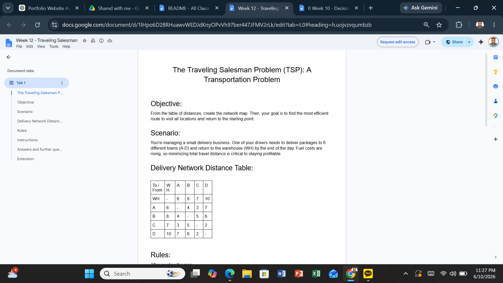
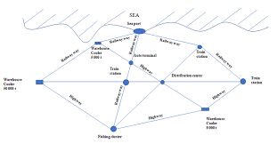

Project Overview
The Traveling Salesman Problem (TSP) is one of the most famous optimization problems in Management Science. The objective is to find the shortest possible route that visits every location exactly once and returns to the starting point. In this activity I worked with a distance matrix and network diagram to identify efficient travel paths.
- Network Analysis
- Route Optimization
- Transportation Planning
- Operations Research
- Logistics Management
Evidence


The activity required constructing a network from a distance matrix and analyzing possible travel routes between locations. The network visualization made it easier to identify efficient connections and compare alternative routes.
Network Analysis
Each city or location is represented as a node, while the connections between them represent possible routes. The challenge is to minimize total travel distance while ensuring every location is visited exactly once.
- Identify all network nodes
- Measure distances between locations
- Compare route alternatives
- Reduce transportation cost
- Find the most efficient route
What Did I Learn?
This activity helped me understand how businesses use optimization techniques to improve logistics and transportation efficiency. I learned that even small route improvements can significantly reduce costs, travel time, and resource consumption.
The Traveling Salesman Problem demonstrated how mathematical models support better operational decision-making.
Real-World Applications
- Amazon delivery routing
- FedEx transportation planning
- Food delivery services
- Airline route optimization
- Supply chain logistics
- Public transportation systems
Organizations use network optimization to reduce costs, improve service quality, and increase operational efficiency.